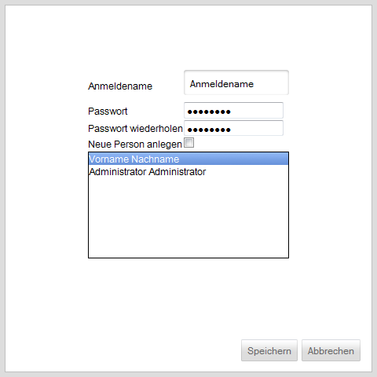
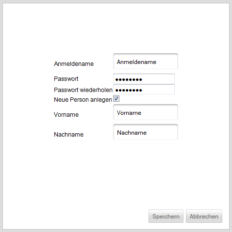

Neuen Benutzer anlegen
Um einen neuen Benutzer der Anwendung hinzuzufügen muss zunächst ein Anmeldename definiert und ein Passwort gesetzt werden. Das Passwort muss dabei zum Ausschluss von Tippfehlern zweimal eingegeben werden.
Da die Benutzer mit Personen verbunden sind, muss entweder eine vorhandene Person ausgewählt oder eine neue Person angelegt werden.
Vorhandene Person auswählen
Soll ein Benutzer erstellt werden, welcher einer bereits vorhandenen Person zugeordnet werden soll, muss in der Oberfläche die Checkbox neben "Neue Person anlegen" deaktiviert sein. Aus der darunter befindlichen Liste wird die gewünschte Person ausgewählt.

Neue Person anlegen
Soll ein Benutzer angelegt werden, welcher einer noch nicht in der Anwendung definierten Person zugeordnet werden soll, kann durch Auswählen der Checkbox neben "Neue Person anlegen" im selben Arbeitsschritt eine neue Person erstellt werden. Hierbei ist die Angabe von Vor- und Nachnamen erforderlich.

Created with the Personal Edition of HelpNDoc: Easily create Web Help sites